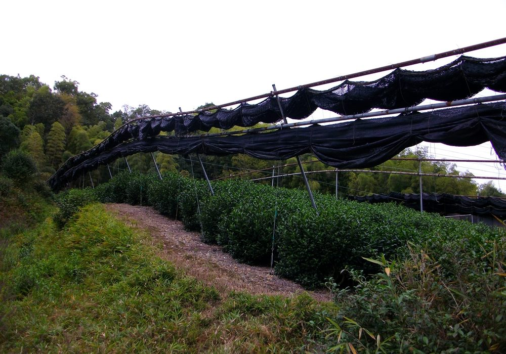
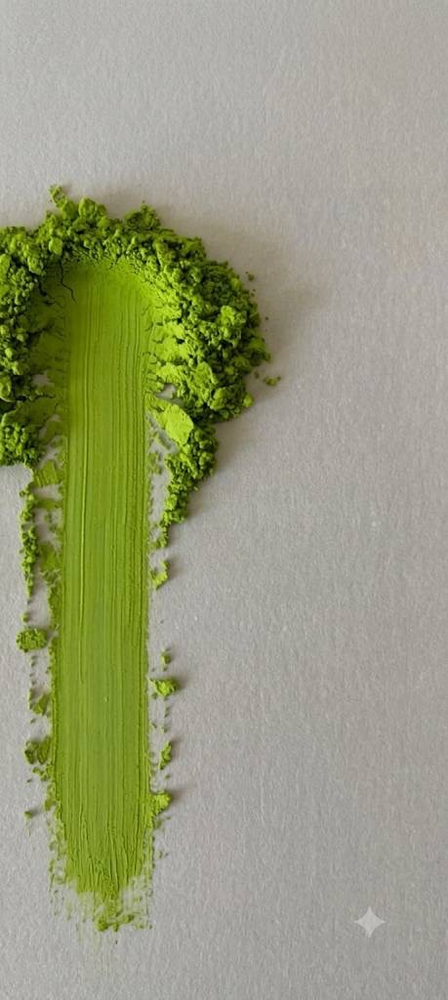
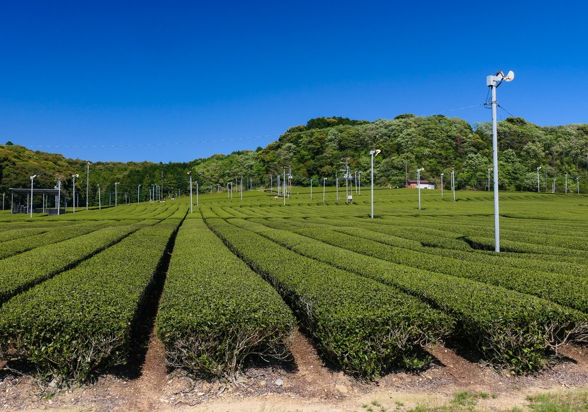
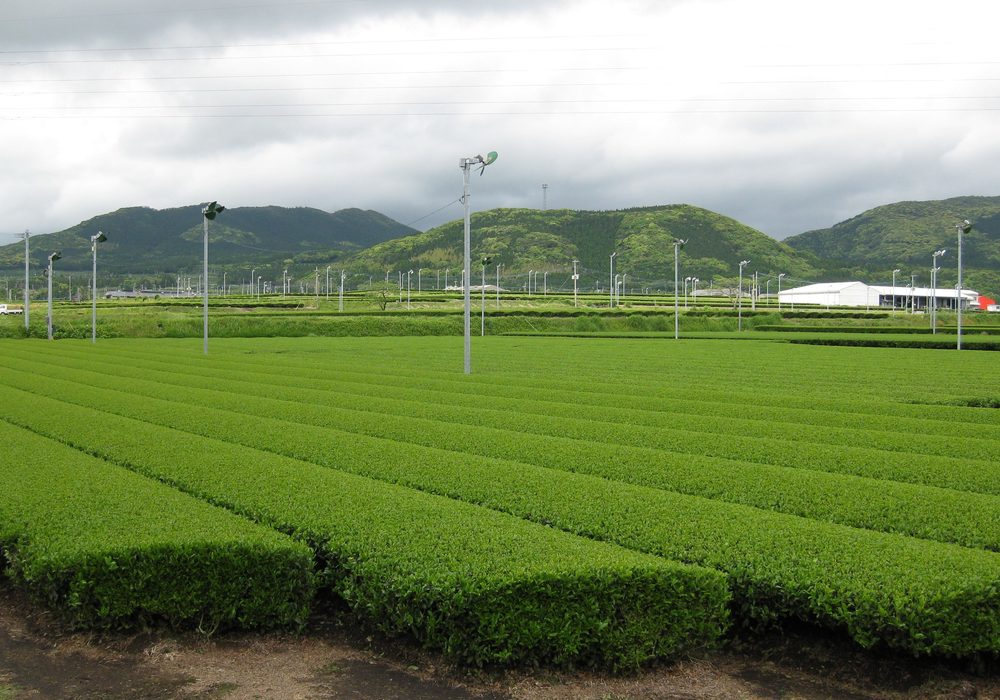
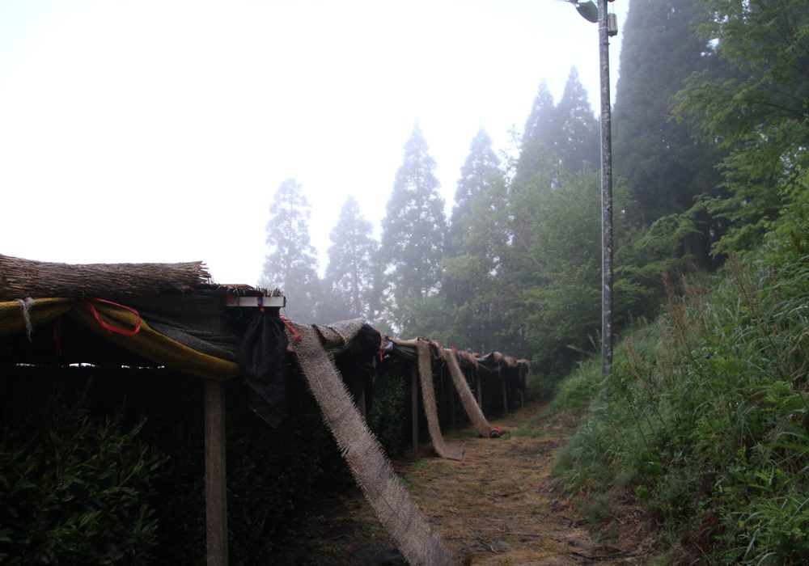
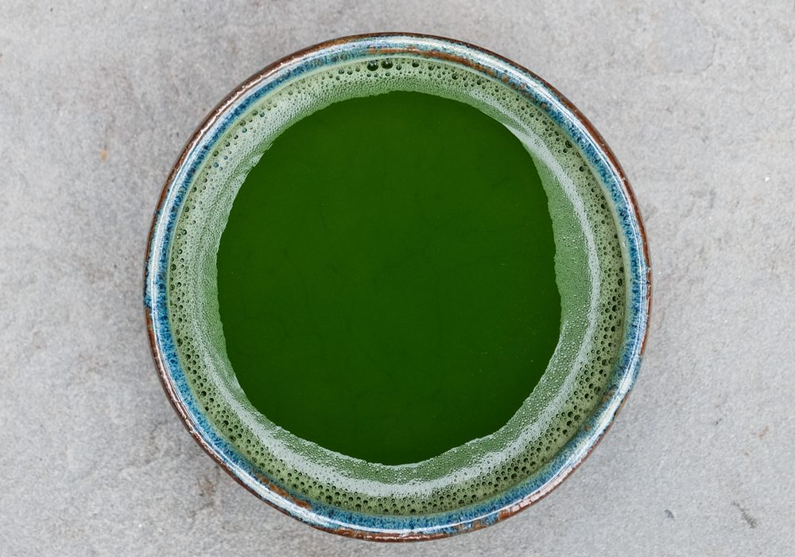
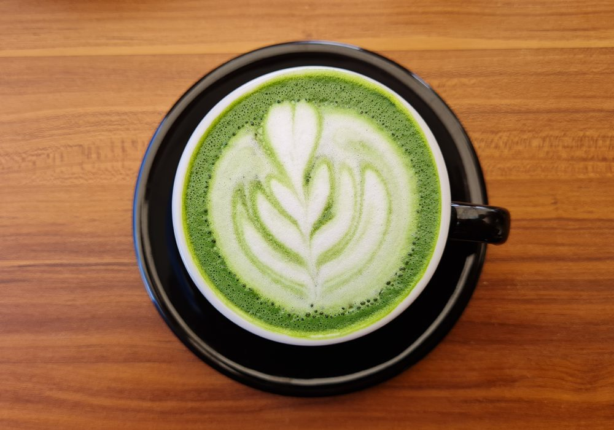
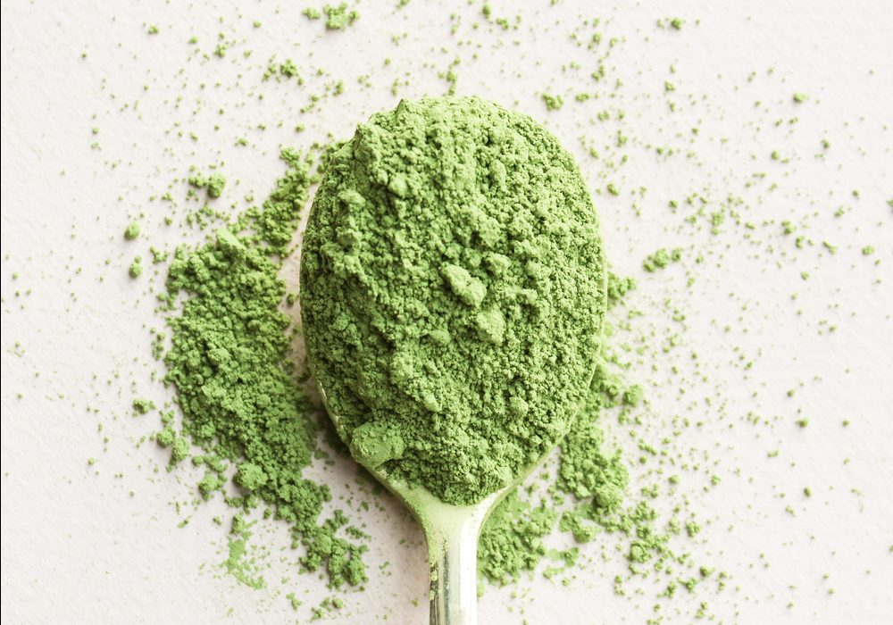
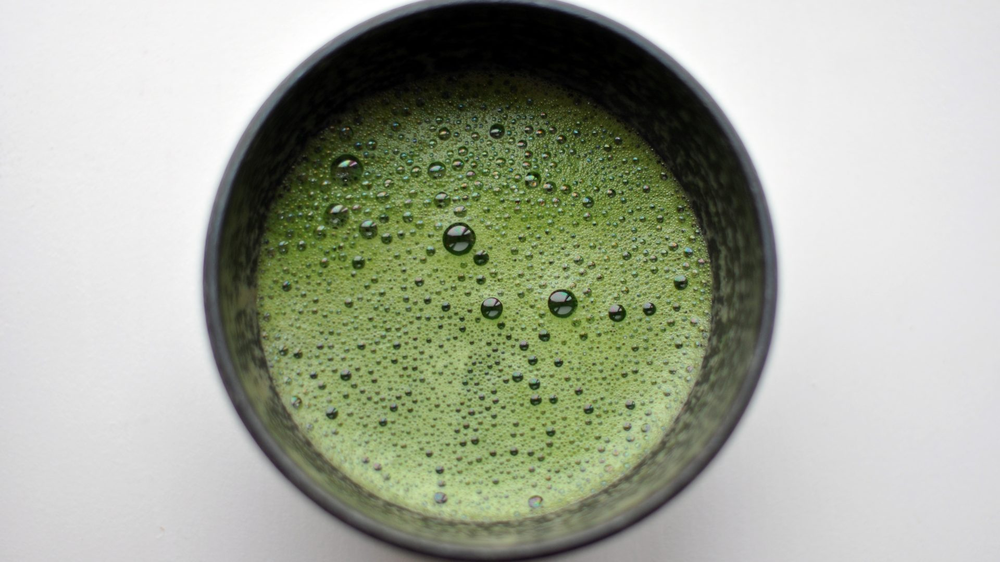

宇治Uji, Kyoto
抹茶の代名詞ともいえる伝統の産地。覆下栽培による濃厚な旨みと、気品のある香りが特長。 お茶会用・高級飲用に。

Japanese Matcha to the World
宇治、静岡、鹿児島、八女 — 日本各地の茶産地から、用途に合う抹茶を選び抜いて。 Japanese Matcha Store D'EFFORT が、 世界のカフェ・製菓メーカー・小売事業者へお届けします。
Four Regions
日本の抹茶は、産地によって味も色も驚くほど異なります。私たちは特定の産地にこだわらず、 宇治・静岡・鹿児島・八女それぞれの個性を理解した上で、お客様の用途に最も合う一品をご提案します。

宇治Uji, Kyoto
抹茶の代名詞ともいえる伝統の産地。覆下栽培による濃厚な旨みと、気品のある香りが特長。 お茶会用・高級飲用に。

静岡Shizuoka
日本最大の茶どころ。すっきりと調和のとれた味わいで、幅広い用途に合わせやすい万能型。 安定した供給量も強みです。

鹿児島Kagoshima
温暖な気候が育む、鮮やかな緑と力強いコク。ミルクや加熱に負けない骨格で、 ラテ・製菓用途に高い評価。

八女Yame, Fukuoka
玉露の名産地として知られる高品質産地。深い甘みとまろやかな口当たりで、 高価格帯の商品づくりに。
About Us
抹茶は同じ「緑の粉」に見えて、産地・品種・仕上げによって味も色も別物です。 私たちは日本各地の産地とつながり、お客様の用途とご予算に本当に合う抹茶を選び抜いて お届けすることを仕事にしています。
「ラテにしたときに映える色がほしい」「焼き菓子に入れても香りが飛ばないものを」 — そうしたご相談にこそ、私たちの価値があります。
複数産地から、用途に合う茶葉を比較して選定。特定産地に縛られません。
飲用・ラテ・製菓それぞれに最適な粒度と味の設計をご提案します。
色調・粒度のばらつきを抑え、継続的なご注文にも安定した品質でお応えします。
海外バイヤーの皆様へ。小ロットのお試しから大容量まで対応します。
4
主要産地
Regions
3
用途別グレード
Grades
20g〜
小ロット対応
Small Lot
B2Bのみ
法人専売
Business Only
Grades & Uses
「良い抹茶」は用途によって変わります。お茶会に最適な抹茶が、ラテや焼き菓子に最適とは限りません。 目的に合わせてお選びください。迷われたらご相談を。

セレモニアル（お茶会・ストレート飲用）
そのまま点てて味わうための最上位グレード。濃厚な旨みと上品な甘み、雑味のない澄んだ後味。
形態: 20〜100g 缶・小袋

カフェ・プレミアム（ラテ・ドリンク用）
ミルクに負けないコクと、写真映えする鮮やかな発色。カフェのシグネチャードリンクに。
形態: 100g〜1kg アルミ袋

インダストリアル（製菓・食品加工用）
加熱しても色と香りが残る設計。安定した品質とコストで、量産ラインにも対応します。
形態: 1〜20kg 業務用
| グレード | 主な用途 | 味わい | おすすめ産地 | 形態 |
|---|---|---|---|---|
| Ceremonial | お茶会・ストレート飲用 | 濃厚な旨み・上品な甘み | 宇治 / 八女 | 20〜100g |
| Cafe / Premium | ラテ・ドリンク | コクと鮮やかな発色 | 鹿児島 / 静岡 | 100g〜1kg |
| Industrial | 製菓・食品加工 | 安定品質・力強い色 | 静岡 / 鹿児島 | 1〜20kg |
Cafeグレード × スチームミルク

Industrialグレード × 冷菓・焼成

Ceremonialグレード × 茶筅
Global B2B & Wholesale
OEM製造から大容量卸まで。用途とご予算をお伺いし、複数産地の中から最適な抹茶をご提案します。 まずはサンプルでお確かめください。
Contact & Sample Request
用途・数量をお知らせいただければ、産地とグレードをご提案いたします。 恐れ入りますが、個人のお客様への販売は行っておりません。海外からのお問い合わせもお気軽に（英語対応可）。